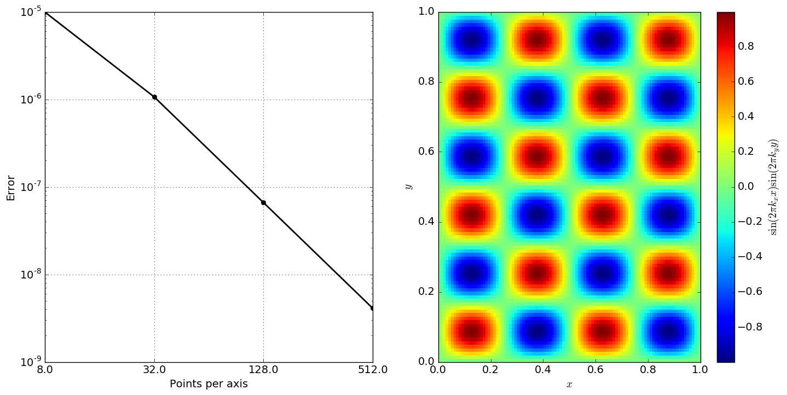

Spiner: Performance portable routines for generic, tabulated, multi-dimensional data
Spiner is a library for storing, indexing, and interpolating multidimensional data in a performance-portable way. It’s intended to run on CPUs, GPUs and everything in-between. You can create a table on a CPU, copy it to a GPU, and interpolate on it in a GPU kernel, for example.
Spiner also defines (via hdf5) a file format that bundles data together with instructions for interpolating it. This means you don’t have to specify anything to start interpolating, simple load the file and evaluate where you want.
Interpolation is linear. Here’s an example of 3D interpolation (2D slice shown) on a GPU, with second-order convergence:
Interpolation is fast and portable. Here’s a benchmark showing performance on CPU and GPU for several architectures and problem sizes:

See below for details of how to use spiner in your project and how to develop for it.
Spiner also relies on Ports of Call as a simple performance portability layer. Ports of Call is included as a submodule, and automatically integrated into the build system.
Contributing
If you use Spiner and need help, submit an issue to the Spiner repository. If you’d like to contribute, just fork and submit a pull request. There’s a check list in the PR template, and one of the main Spiner developers will review your PR.
Indices and tables
This documentation is approved for unlimited release, LA-UR-22-20363.